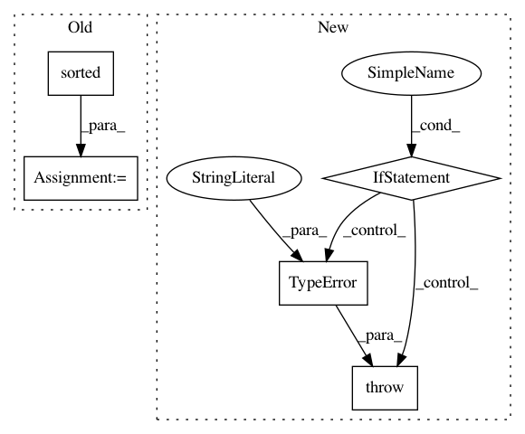

005968dcfbd2a8f70d8ea3957c8abba60a12492d,pliers/filters/video.py,FrameSamplingFilter,_filter,#FrameSamplingFilter#Any#,38
Before Change
key=lambda i: diffs[i],
reverse=True)[:self.top_n]
frame_index = sorted(list(set(video.frame_index).intersection(new_idx)))
return VideoFrameCollectionStim(filename=video.filename,
clip=video.clip,
frame_index=frame_index)
After Change
super(FrameSamplingFilter, self).__init__()
def _filter(self, video):
if not isinstance(video, VideoStim):
raise TypeError("Currently, frame sampling is only supported for "
"complete VideoStim inputs.")
if self.every is not None:
new_idx = range(video.n_frames)[::self.every]
elif self.hertz is not None:
interval = video.fps / float(self.hertz)
In pattern: SUPERPATTERN
Frequency: 3
Non-data size: 5
Instances
Project Name: tyarkoni/pliers
Commit Name: 005968dcfbd2a8f70d8ea3957c8abba60a12492d
Time: 2018-05-15
Author: quinten.mcnamara@gmail.com
File Name: pliers/filters/video.py
Class Name: FrameSamplingFilter
Method Name: _filter
Project Name: pgmpy/pgmpy
Commit Name: 73dcacffa7dee910a9478cd7d783d91ef84dc987
Time: 2013-09-21
Author: snigam3112@gmail.com
File Name: BayesianModel.py
Class Name: BayesianModel
Method Name: add_nodes
Project Name: RaRe-Technologies/gensim
Commit Name: da7432bf376bab88da4e3845c79863ca927d5187
Time: 2013-04-23
Author: radimrehurek@seznam.cz
File Name: gensim/corpora/dictionary.py
Class Name: Dictionary
Method Name: doc2bow